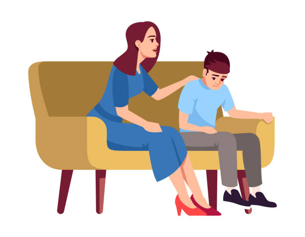

Awareness
The best step to improve the mental health awareness of Filipinos is to speak about the topic. Talk to your friends and families about this. The discussion of mental health will help those who are scared to speak up. Let's start the conversation about it. We will fight for its awareness until it is normalized. We should also break the stigmas and misbeliefs of other people. Aside from that, always check up on your loved-ones as well. I have a lot of friends that are struggling with depression or anxiety. I learned that we should be of help to them and be by their side. Lastly, do not forget about yourself. Do not be afraid to ask for help when you yourself is struggling with these isssues. Talk to your friends or family about it. We can also call the Philippine Suicide Hotline which is 0966-351-4518. You matter, all of us.
Mental Health Transparency
Here is a video that may help in understanding the topic more. After watching the video and leaving the website, I would like for you to read more about anything mental health. Thank you for the time reading this!